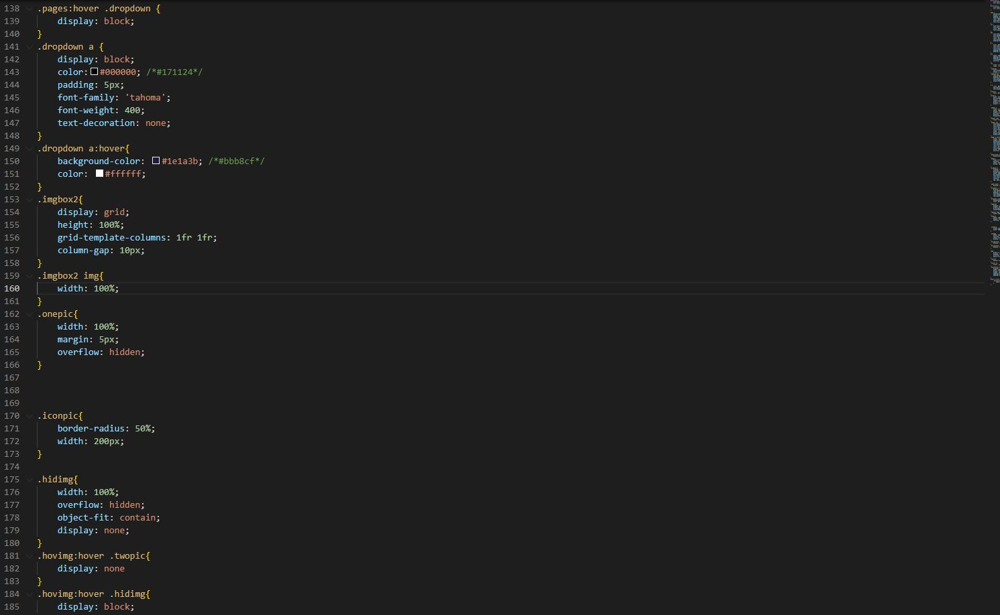
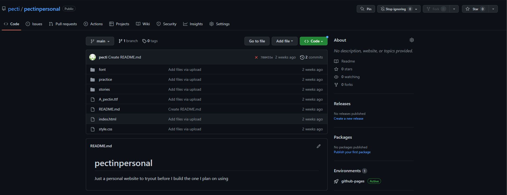

My Personal Websites:
In my free time, I like to design websites with HTML and CSS, after I’ve finished working on them. I like to run them through GitHub because it gives me full access to the website's backend.
My Hobbies Website:
I designed this personal website for my hobbies and interests, mainly art and writing. It was my first non-school-related website, So a lot of it also served as practice for my portfolio website. It’s pretty barren, but I mostly wanted to get a hang of the internal infrastructure, I plan to add more content later.

For the CSS section, I wanted to make sure the site looked personalized, I learned how to implement dropdown menus using the ‘:hover’ feature and the 'display: none;' command.
This Website:
As you probably guessed, I also developed this website in my free time to display my IT experience
And Heres the CSS for it:
Launching my sites
As I mentioned above, I chose to launch my sites using Github. It tends to be a bit intimidating to new users, but it’s actually really easy once you get the hang of it, so long as you know how to file HTML and CSS files properly.
